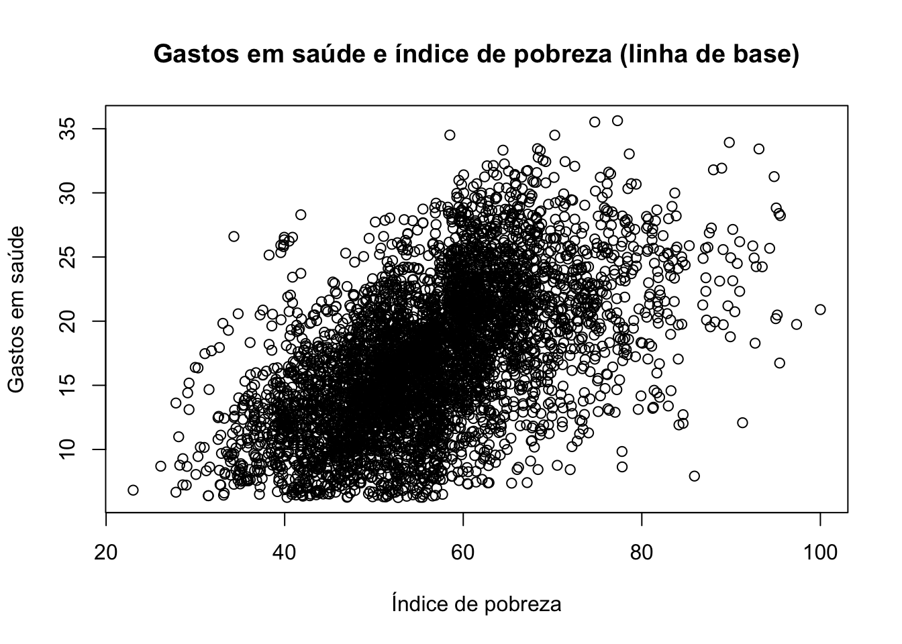
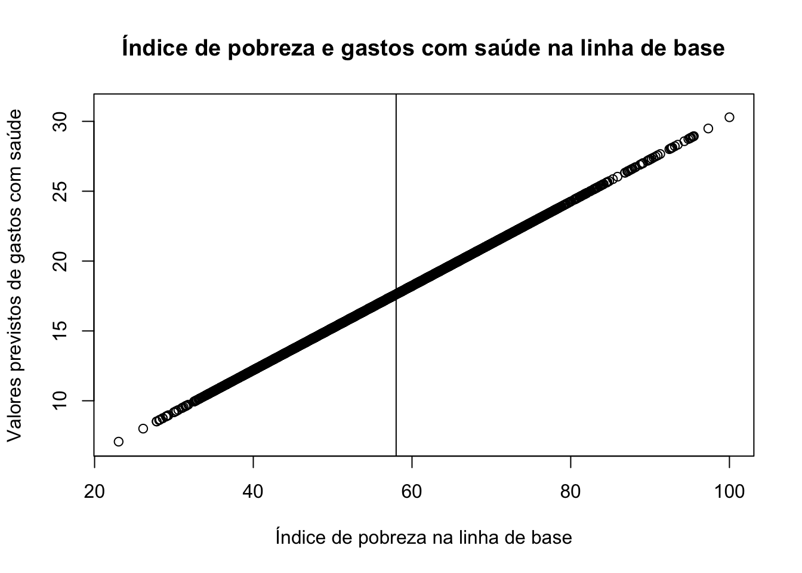
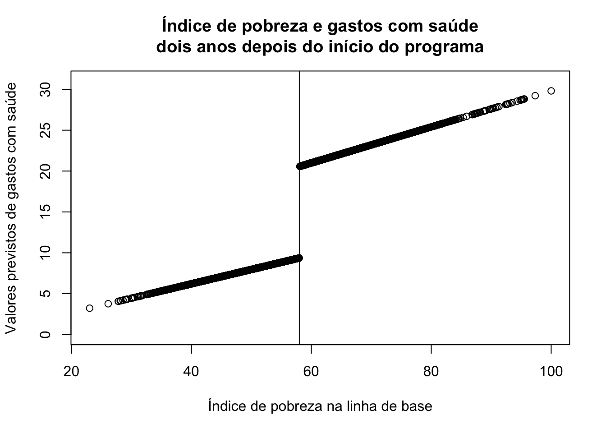

library(haven) # abre arquivos do StataExercício 7 — Avaliando o HISP com Regressão com Descontinuidade
1 Instruções
As perguntas ao final devem ser respondidas e entregues como relatório gerado em Quarto. Entrega original: 20/12/2024, às 23h59.
2 Avaliando o HISP com RDD
Neste exercício vamos comparar os gastos em saúde entre domicílios logo abaixo e logo acima do ponto de corte do índice de pobreza, nos municípios que receberam o programa.
Após algumas investigações sobre o desenho do HISP, você descobre que, na prática, as autoridades focalizaram o programa nas famílias de baixa renda usando a linha de pobreza nacional.
A linha de pobreza baseia-se em um índice de pobreza, que atribui a cada família do país um escore entre 20 e 100, com base em seus ativos, condições de moradia e estrutura sociodemográfica. Quanto maior o escore, menos pobre é a família.
A linha de pobreza foi estabelecida oficialmente na marca de 58: famílias com escore até 58 são classificadas como pobres (e elegíveis ao programa), e famílias com escore acima de 58 não são consideradas pobres.
Mesmo nos municípios de tratamento, somente as famílias pobres são elegíveis para se inscrever no HISP; todavia, a amostra inclui dados tanto das famílias pobres quanto das famílias em melhor situação econômica nesses municípios.
Vamos abrir o banco de dados e selecionar os dados que nos interessam: os municípios que receberam o tratamento.
d <- read_dta("../dados/evaluation.dta")
d <- d[d$treatment_locality == 1, ] # famílias elegíveis e não elegíveis dos mesmos municípios
dim(d)[1] 9919 22names(d) [1] "locality_identifier" "household_identifier" "treatment_locality"
[4] "promotion_locality" "eligible" "enrolled"
[7] "enrolled_rp" "poverty_index" "round"
[10] "health_expenditures" "age_hh" "age_sp"
[13] "educ_hh" "educ_sp" "female_hh"
[16] "indigenous" "hhsize" "dirtfloor"
[19] "bathroom" "land" "hospital_distance"
[22] "hospital" # A elegibilidade segue exatamente a regra do índice de pobreza (escore <= 58)
table(elegivel = d$eligible, abaixo_do_corte = d$poverty_index <= 58) abaixo_do_corte
elegivel FALSE TRUE
0 3990 0
1 0 59293 Antes do programa (linha de base)
Usando os domicílios dos municípios de tratamento, vamos representar graficamente a relação entre o índice de pobreza e os gastos com saúde antes do início do HISP (rodada 0).
d.base <- d[d$round == 0, ]
dim(d.base)[1] 4959 22plot(d.base$poverty_index, d.base$health_expenditures,
main = "Gastos em saúde e índice de pobreza (linha de base)",
xlab = "Índice de pobreza",
ylab = "Gastos em saúde")
Vamos rodar a regressão e plotar os valores previstos.
mod.base <- lm(health_expenditures ~ poverty_index, # gastos em saúde ~ índice de pobreza
data = d.base)
summary(mod.base)
Call:
lm(formula = health_expenditures ~ poverty_index, data = d.base)
Residuals:
Min 1Q Median 3Q Max
-18.1134 -3.0887 -0.0425 2.9392 16.7317
Coefficients:
Estimate Std. Error t value Pr(>|t|)
(Intercept) 0.127431 0.356504 0.357 0.721
poverty_index 0.301659 0.006256 48.217 <2e-16 ***
---
Signif. codes: 0 '***' 0.001 '**' 0.01 '*' 0.05 '.' 0.1 ' ' 1
Residual standard error: 4.608 on 4957 degrees of freedom
Multiple R-squared: 0.3193, Adjusted R-squared: 0.3191
F-statistic: 2325 on 1 and 4957 DF, p-value: < 2.2e-16d.base$predito <- predict(mod.base) # valores previstos pela regressão
plot(d.base$poverty_index,
d.base$predito,
xlim = c(23, 100),
ylim = c(7, 31),
main = "Índice de pobreza e gastos com saúde na linha de base",
xlab = "Índice de pobreza na linha de base",
ylab = "Valores previstos de gastos com saúde")
abline(v = 58) # linha demarcando o ponto de corte
A figura mostra que, à medida que aumenta o escore das famílias no índice de pobreza (ou seja, à medida que as famílias ficam menos pobres), a regressão prevê gastos com saúde mais altos: famílias em melhor situação econômica gastam mais com saúde.
4 Depois do programa (rodada de acompanhamento)
Dois anos após o início do piloto, apenas as famílias com escore até 58 (à esquerda da linha de pobreza) puderam se inscrever no HISP. Usando agora os dados pós-tratamento (rodada 1), refazemos o gráfico. Primeiro, centralizamos o índice de pobreza no ponto de corte, criando uma inclinação separada para cada lado.
d.pos <- d[d$round == 1, ]
d.pos$poverty_index_left <- ifelse(d.pos$poverty_index <= 58, d.pos$poverty_index - 58, 0)
d.pos$poverty_index_right <- ifelse(d.pos$poverty_index > 58, d.pos$poverty_index - 58, 0)Rodando o modelo
mod.pos <- lm(health_expenditures ~
poverty_index_left +
poverty_index_right +
eligible,
data = d.pos)
summary(mod.pos)
Call:
lm(formula = health_expenditures ~ poverty_index_left + poverty_index_right +
eligible, data = d.pos)
Residuals:
Min 1Q Median 3Q Max
-16.816 -6.449 -2.293 3.440 89.489
Coefficients:
Estimate Std. Error t value Pr(>|t|)
(Intercept) 20.55449 0.33763 60.878 < 2e-16 ***
poverty_index_left 0.17557 0.03028 5.798 7.12e-09 ***
poverty_index_right 0.22028 0.03156 6.979 3.37e-12 ***
eligible -11.19171 0.46618 -24.007 < 2e-16 ***
---
Signif. codes: 0 '***' 0.001 '**' 0.01 '*' 0.05 '.' 0.1 ' ' 1
Residual standard error: 10.1 on 4956 degrees of freedom
Multiple R-squared: 0.338, Adjusted R-squared: 0.3376
F-statistic: 843.5 on 3 and 4956 DF, p-value: < 2.2e-16d.pos$predito <- predict(mod.pos)
plot(d.pos$poverty_index,
d.pos$predito,
xlim = c(23, 100),
ylim = c(0, 31),
main = "Índice de pobreza e gastos com saúde\ndois anos depois do início do programa",
xlab = "Índice de pobreza na linha de base",
ylab = "Valores previstos de gastos com saúde")
abline(v = 58)
Desta vez, a relação entre o índice de pobreza e os gastos previstos com saúde não é mais contínua: existe uma clara interrupção, ou “descontinuidade”, na linha de pobreza. A descontinuidade reflete uma queda nos gastos com saúde entre as famílias elegíveis ao programa. Como as famílias logo abaixo e logo acima do limite de 58 pontos são muito semelhantes, a explicação mais plausível para o salto é que um grupo era elegível para se inscrever no programa e o outro, não.
Como estimar essa diferença ou efeito causal? O coeficiente de eligible no modelo acima já é a estimativa do salto no ponto de corte. Podemos também incluir controles:
mod.pos.controles <- lm(health_expenditures ~
poverty_index_left +
poverty_index_right +
eligible +
age_hh +
educ_hh +
hhsize +
dirtfloor +
bathroom +
land,
data = d.pos)
summary(mod.pos.controles)
Call:
lm(formula = health_expenditures ~ poverty_index_left + poverty_index_right +
eligible + age_hh + educ_hh + hhsize + dirtfloor + bathroom +
land, data = d.pos)
Residuals:
Min 1Q Median 3Q Max
-21.675 -5.482 -1.581 3.538 80.277
Coefficients:
Estimate Std. Error t value Pr(>|t|)
(Intercept) 27.49727 0.80233 34.272 < 2e-16 ***
poverty_index_left -0.03740 0.02868 -1.304 0.1924
poverty_index_right 0.17573 0.02998 5.861 4.90e-09 ***
eligible -9.27734 0.43189 -21.481 < 2e-16 ***
age_hh 0.06138 0.01097 5.597 2.30e-08 ***
educ_hh -0.12382 0.05583 -2.218 0.0266 *
hhsize -1.99532 0.06618 -30.152 < 2e-16 ***
dirtfloor -2.09116 0.29101 -7.186 7.68e-13 ***
bathroom 0.28436 0.27389 1.038 0.2992
land -0.05568 0.04320 -1.289 0.1975
---
Signif. codes: 0 '***' 0.001 '**' 0.01 '*' 0.05 '.' 0.1 ' ' 1
Residual standard error: 9.2 on 4950 degrees of freedom
Multiple R-squared: 0.4509, Adjusted R-squared: 0.4499
F-statistic: 451.7 on 9 and 4950 DF, p-value: < 2.2e-16Uma forma alternativa e mais “visual” de calcular o efeito é comparar os valores previstos de quem está logo abaixo e logo acima do corte:
d.pos$predito <- predict(mod.pos.controles)
d.predito.left <- d.pos[d.pos$poverty_index > 55 & d.pos$poverty_index <= 58, ]
d.predito.right <- d.pos[d.pos$poverty_index > 58 & d.pos$poverty_index <= 61, ]
mean(d.predito.left$predito) - mean(d.predito.right$predito)[1] -11.810625 Teste de placebo: havia descontinuidade antes do programa?
Se o salto foi causado pelo programa, ele não deveria existir (ou deveria ser bem menor) na linha de base, quando ninguém ainda recebia o benefício. Vamos estimar o mesmo modelo com os dados da rodada 0.
d.base$poverty_index_left <- ifelse(d.base$poverty_index <= 58, d.base$poverty_index - 58, 0)
d.base$poverty_index_right <- ifelse(d.base$poverty_index > 58, d.base$poverty_index - 58, 0)
mod.placebo <- lm(health_expenditures ~
poverty_index_left + poverty_index_right + eligible +
age_hh + educ_hh + hhsize + dirtfloor + bathroom + land,
data = d.base)
summary(mod.placebo)
Call:
lm(formula = health_expenditures ~ poverty_index_left + poverty_index_right +
eligible + age_hh + educ_hh + hhsize + dirtfloor + bathroom +
land, data = d.base)
Residuals:
Min 1Q Median 3Q Max
-4.7124 -1.3647 0.1855 1.0677 6.4936
Coefficients:
Estimate Std. Error t value Pr(>|t|)
(Intercept) 25.671983 0.143272 179.184 < 2e-16 ***
poverty_index_left 0.003406 0.005177 0.658 0.5107
poverty_index_right 0.025612 0.005410 4.734 2.26e-06 ***
eligible -1.395787 0.077926 -17.912 < 2e-16 ***
age_hh 0.078355 0.001979 39.598 < 2e-16 ***
educ_hh 0.112375 0.010074 11.155 < 2e-16 ***
hhsize -2.004018 0.011940 -167.846 < 2e-16 ***
dirtfloor -2.987341 0.052520 -56.880 < 2e-16 ***
bathroom 0.096547 0.049421 1.954 0.0508 .
land 0.184012 0.007796 23.603 < 2e-16 ***
---
Signif. codes: 0 '***' 0.001 '**' 0.01 '*' 0.05 '.' 0.1 ' ' 1
Residual standard error: 1.66 on 4949 degrees of freedom
Multiple R-squared: 0.9118, Adjusted R-squared: 0.9117
F-statistic: 5687 on 9 and 4949 DF, p-value: < 2.2e-16